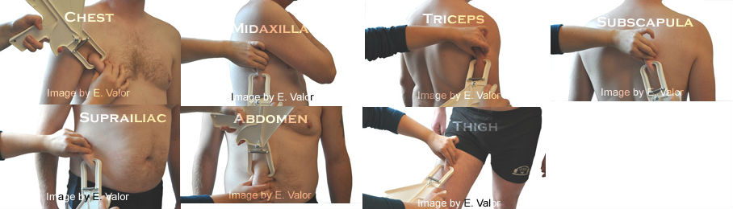

The 7-Site Skinfold Protocol: Step-by-Step for Self-Measurement About $120 total. She paid in cash.
16 The 7-Site Skinfold Protocol: Step-by-Step for Self-Measurement He walked faster than he needed to. His heels clicked. He liked the sound.
I remeber the first time I tried to measure my own body fat. It did not go well. I was 23, fresh out of grad school, standing in my bathroom in Portland. I had a set of plastic calipers from Amazon. I followed the instructions. I pinched my abdomen – or at least I thought I did. The caliper read 8mm. I measured again: 14mm. Again: 11mm. I gave up and went to get coffee. Here’s what I learned: self‑measurement is harder than measuring someone else. You can’t see the sites on your back. You have to contort. You have to trust your fingers. But it’s possible. And it’s worth learning. The Skinfold Measurement Tracker will log your results.
The 7 sites For both men and women, the 7‑site protocol includes: chest, midaxillary, suprailiac, abdominal, thigh, triceps, subscapular. Chest – diagonal fold halfway between the nipple and the armpit. For women, take the measurement just above the breast tissue, not on it. Midaxillary – vertical fold directly below the armpit at waist level. Reach your arm across your chest to access the site. Suprailiac – diagonal fold just above the hip bone, at the midaxillary line. Angle the fold about 45 degrees. Abdominal – vertical fold one inch to the right of the belly button. Mark the spot with a pen so you measure the same place every time.
Thigh – vertical fold midway between the hip and the knee on the front of the thigh. Sit on a chair with your knee bent at 90 degrees. Triceps – vertical fold on the back of the arm, midway between the shoulder and elbow. Let your arm hang relaxed. Subscapular – diagonal fold just below the shoulder blade. Reach behind your back. Feel for the bottom tip of your shoulder blade. Pinch just below it, angled downward. The pinch technique For what it's worth.
Stand in front of a mirror so you can see what you’re doing. Use your thumb and index finger to grasp a fold of skin and the fat underneath. Pull the fold away from the muscle. You should feel the skin separate. If you can’t, you’re pinching too shallow. Place the caliper about 1 cm below your fingers – not on top of them. Let the caliper spring close. Don’t squeeze.
The caliper has a spring. Trust it. Read the number after 2-3 seconds. Take each site three times. If the three readings are within 1mm of each other, average them. If they vary by more than 2mm, discard them and start over. You’re likely pinching a different amount of skin each time. Common self-measurement errors
Pinching too much skin. You’ll catch muscle. The fold will be hard to lift. The reading will be artificially high. Fix: practice on a lean part of your body first, like your forearm. Feel the difference between skin‑plus‑fat and skin‑plus‑fat‑plus‑muscle. Pinching too little skin. You’re measuring only the superficial layer. The reading will be artificially low. Fix: pull upward untill the skin tents. Inconsistent site placement.
Your abdomen reading from last month might be half an inch left of your navel; this month it might be an inch Fix: use a washable marker. Draw a small dot on each site. Measure from the dot. Measuring after exercise. Your skinfolds will be thicker due to increased blood flow. Fix: measure in the morning before any activity. Measuring different sides of the body. Your left thigh might have a different fat distribution than your Fix: always measure the same side. I choose the right side for everyone. The 3-site alternative If 7 sites is too much, use the 3-site protocol. For men: chest, abdomen, thigh. For women: triceps, suprailiac, thigh. The error is higher – about 4-6% instead of 3-5% – but it’s simpler. The Skinfold Measurement Tracker can handle both. How to calculate body fat from skinfolds
Once you have your site measurements in millimeters, you plug them into the Jackson-Pollock equation. The Body Fat Percentage Estimator does the math for you.
How often to measure Every 4-8 weeks. Skin changes take time. Measuring weekly will frustrate you because day‑to‑day variance is real. I measure clients monthly. That’s enough to see a trend. When skinfolds don’t work
Very high body fat – over 35% for women, over 30% for men. The caliper may not be able to grasp a fold, or the equations might extrapolate poorly. Use circumference measurements or DEXA instead. Older adults – over 65. Skin thickness decreases with age, compressing the measurement artificially low. People who have lost significant weight – over 50 pounds. Loose skin can be mistaken for fat. The bottom line
Self‑measurement with skinfolds is not as accurate as a skilled technician. But it’s better than nothing. And it’s far better than trusting the scale. Practice. Be consistent. Track trends, not absolutes. You can do this. I did. After a lot of coffee. He caught himself grinning at a stranger. He didn't stop.